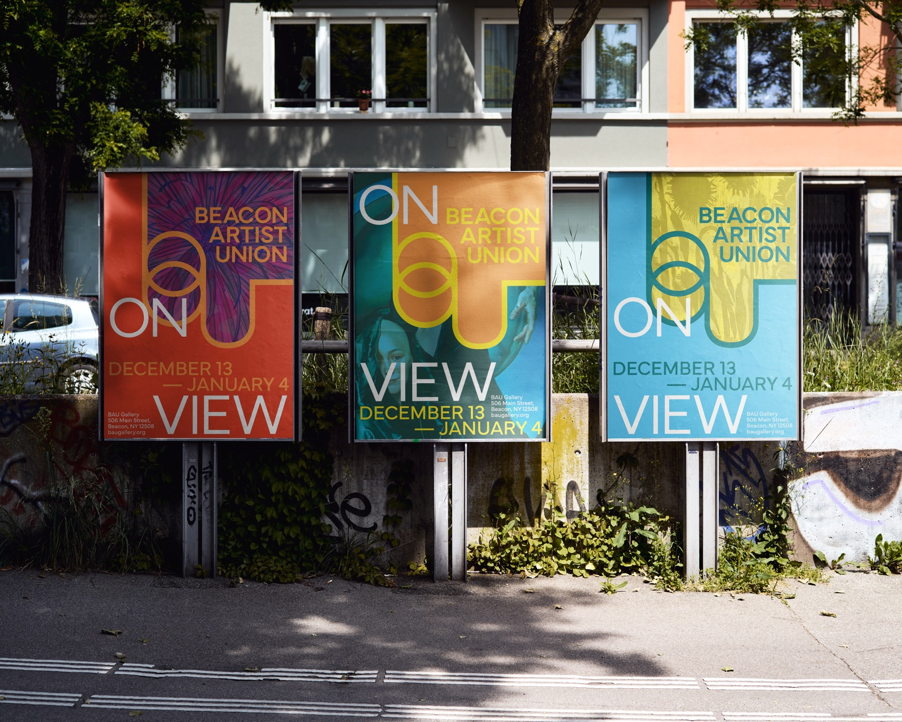
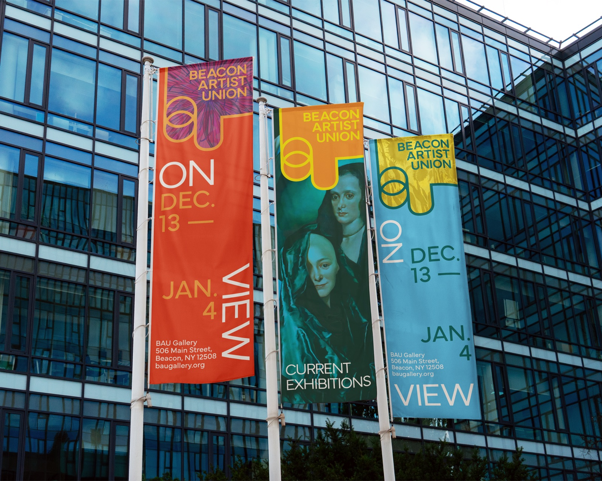
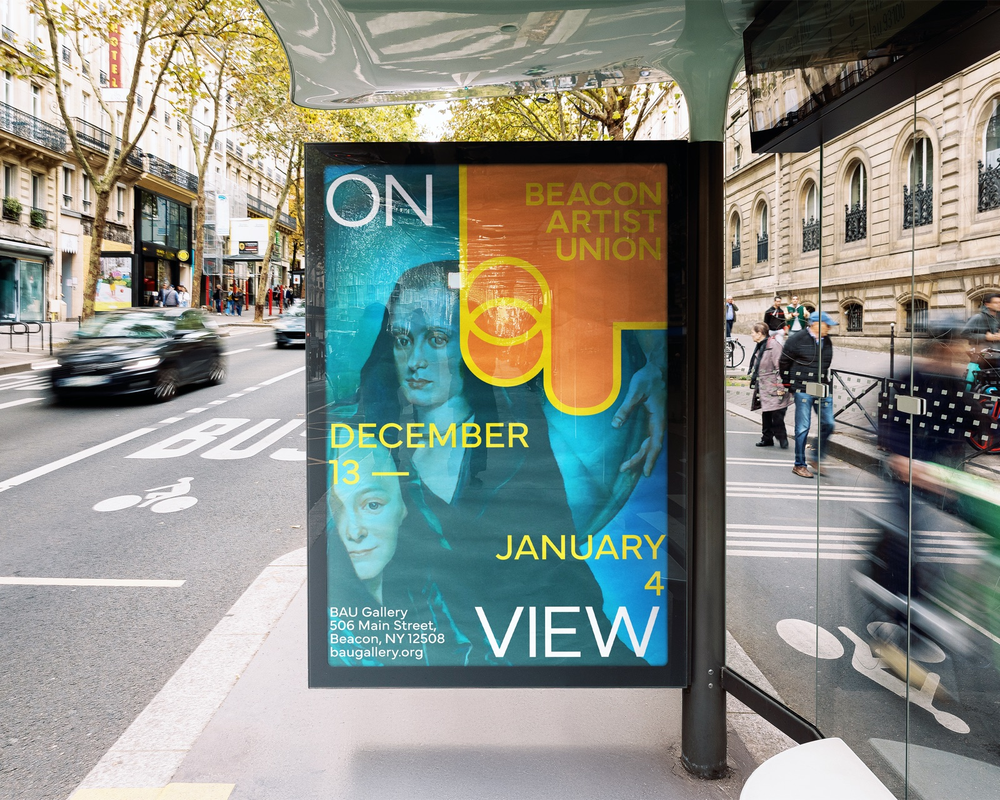
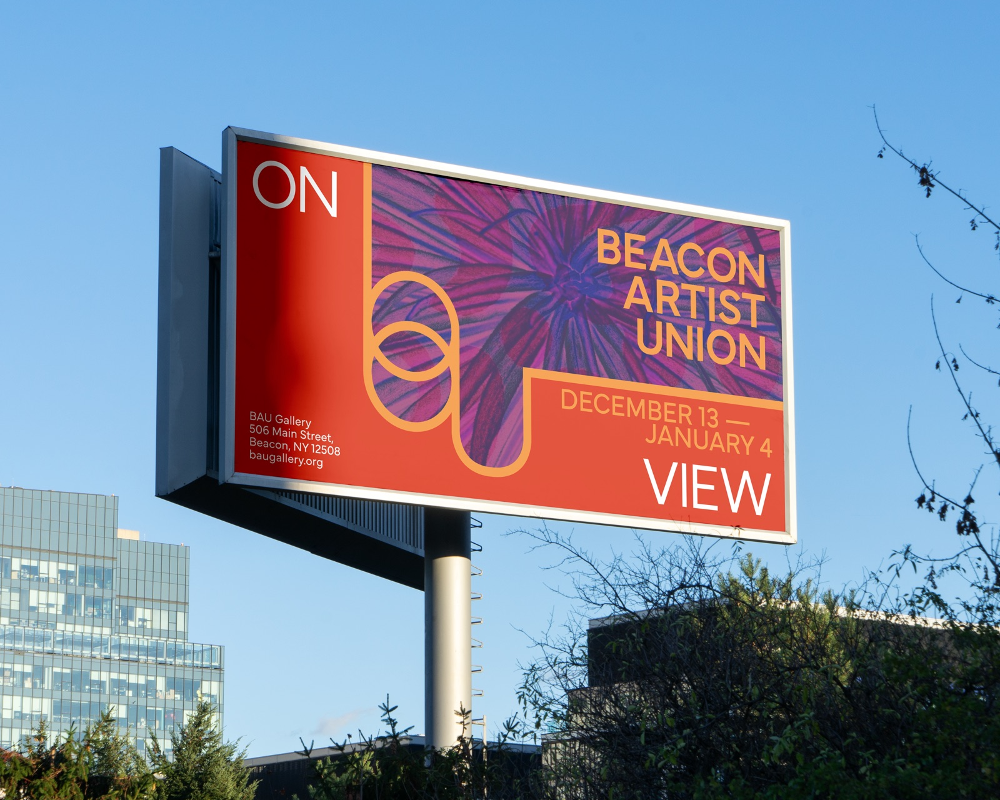
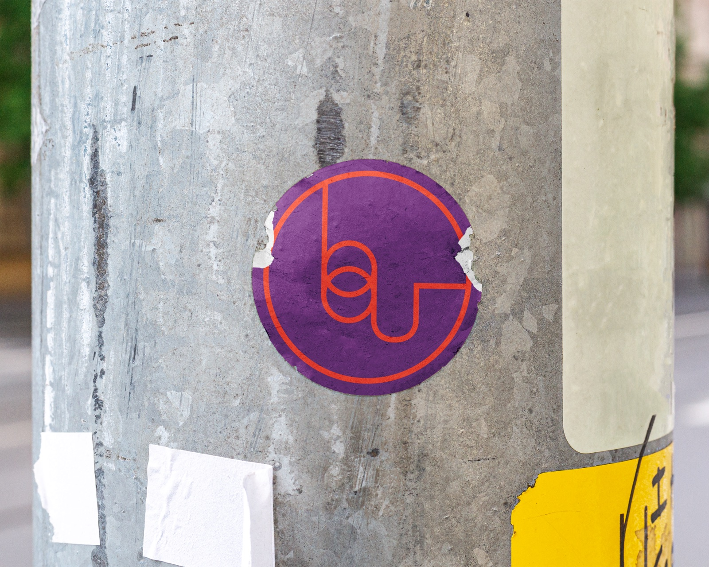
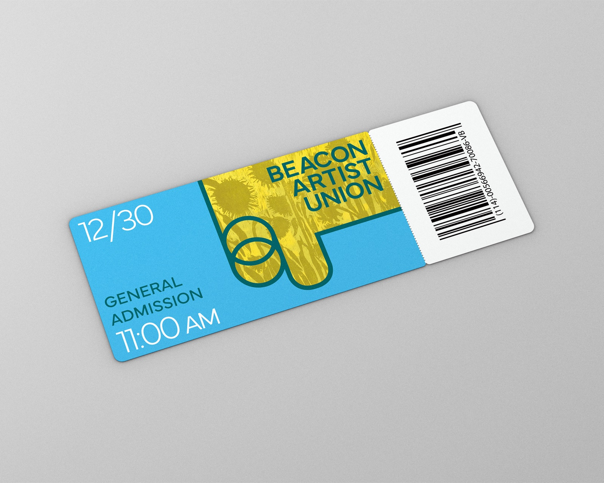
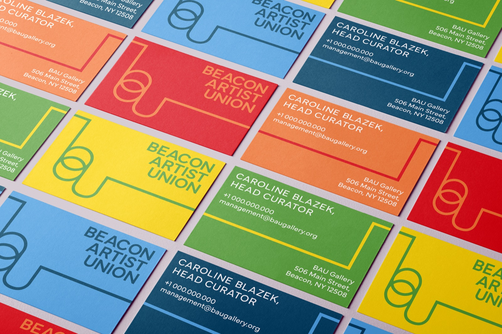
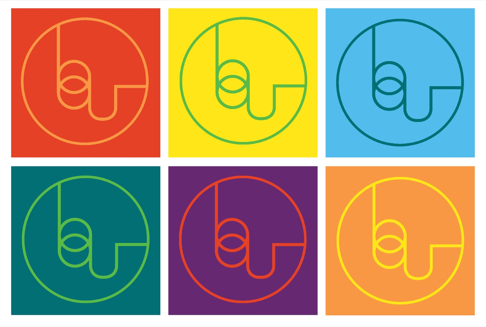
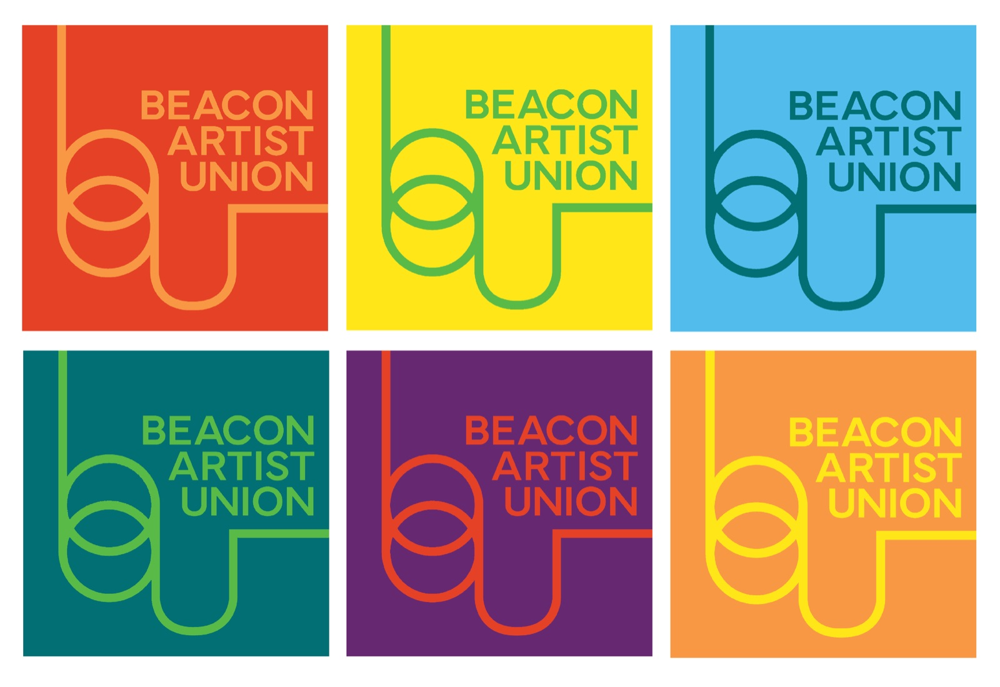

Beacon Artist Union
- InDesign
- Illustrator
- Photoshop
This identity redesign for the Beacon Artist Union creates a visual system that communicates the openness, energy, and vibrancy of the gallery.
The Beacon Artist Union (BAU) is an artist-run gallery in the Hudson Valley dedicated to experimentation, collaboration, and community engagement. Its emphasis on diverse artistic disciplines and thinking shaped my vision for this project. I aimed to design an identity system that not only reflects BAU’s dynamic spirit, but also celebrates its commitment to creative growth and artistic exploration.


Developing the system
Beginning with a simplified logo derived from the gallery’s abbreviated name, I crafted a distinctive icon that promotes an energetic, modern look.
I then developed a vibrant color palette to evoke curiosity and discovery, using shifts in scale and color to create visual hierarchy across materials.




Applying to multiple formats
By overlaying selected gallery artworks with subtle color treatments, the new identity highlights the diversity of creative voices while maintaining a unified and memorable brand presence.

